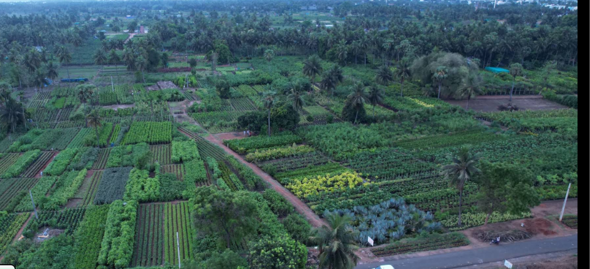
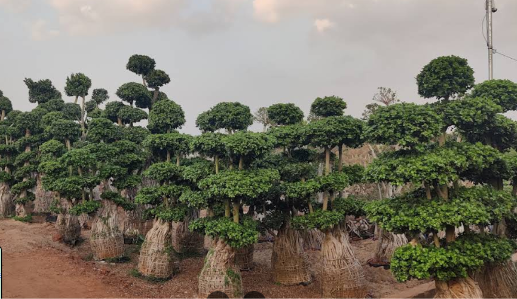
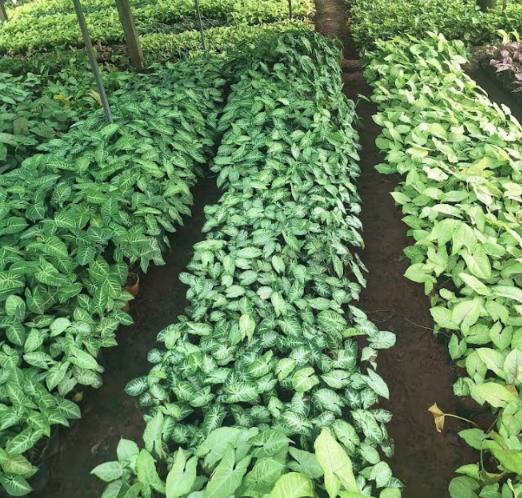
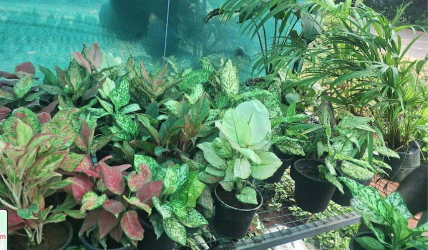
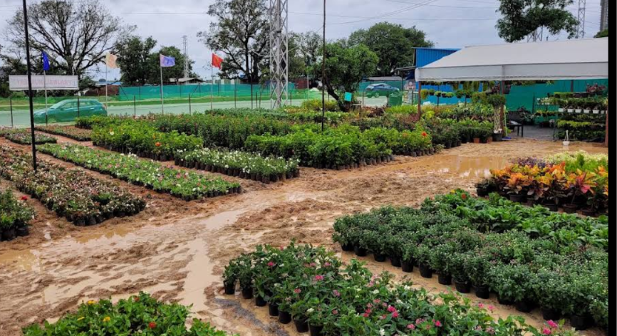

Rooted in the Soil.
Growing India's Green Future.
Over 1,000+ contiguous acres of field-grown specimen trees, handcrafted bonsai, and exotic indoor plants. Direct from generational growers in Kadiyam, East Godavari.
KADIYAM
NURSERIES16.9070° N, 81.8204° E · East Godavari, Andhra Pradesh
Asia's Largest Living
Botanical Expanse.
Vast acres of acclimatized flora nourished by the sacred Godavari river waters and fertile alluvial silt.

Witness the Scale
from the Sky.
A continuous aerial walkthrough across Kadiyam's growing beds, greenhouses, and specimen rows.
Curated Specimens
from Kadiyam's Beds.
Real photographs of our hand-shaped bonsai, indoor foliage, flowering beds, and ground cover saplings.




Grown with Care,
Shaped by Nature.
Every plant reflects generations of agricultural mastery in the Godavari basin.
HANDCRAFTED SPECIMEN BONSAI — ROOT-BOUND IN ALLUVIAL SILT AND WOVEN WICKER FOR SAFE TRANSIT.
Living Sculptures
Hand-guided over years of meticulous care. Each root bundle is packed in native red soil and woven wicker for safe transplanting anywhere across India.
ACCLIMATIZED SHADEHOUSE BOTANICALS — VIBRANT AGLAONEMAS CONDITIONED FOR ARCHITECTURAL INTERIORS.
Architectural Foliage
Grown under regulated microclimates in Kadiyam shade-nets. High leaf variegation and robust root systems ensure thriving health in residential and commercial spaces.
Visit Kadiyam.
Walk the Green Rows.
Experience Asia’s historic nursery belt in person. Select your specimens directly from the field beds or arrange bulk dispatch across India.
Kadiyam, East Godavari District,
Andhra Pradesh, India — 533126
Monday to Sunday: 6:00 AM – 7:00 PM
Open All 365 Days
Direct truckload and containerized plant transport to all states across India.